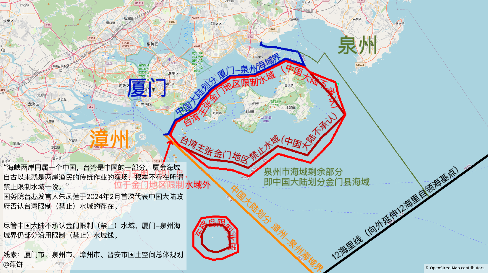

前几周在翻阅《泉州市国土空间总体规划2021-2035年（草案公示稿）》时，在第一页的泉州市地图部分看出了端倪。

第一眼看，感觉泉州市金门部分的海域界像是沿用自台湾宣称的“金门地区限制（禁止）海域”，经过对比后发现事实亦是如此。
在金门西侧，中国大陆的行政区划划分甚至为不在金门限制水域范围内的五胆（担）岛将泉州市的海域界向西侧延伸些许。南部不沿用金门限制水域界，而是向东南延伸至12海里线。
中国大陆行政图是均不显示此区域海域界的。这证明中国大陆的行政区划图不仅会在争议地区（中国大陆内部类似于省与省之间的争议）避免绘制此类界线，敏感地区亦是如此。
中国大陆官方在2024年曾表态称其不承认台湾限制（禁止）水域界，而中国大陆的行政区界线却沿用了这一界线。这一地图发布于2024年前，侧面说明中国大陆内部对此海域界的态度是默许
